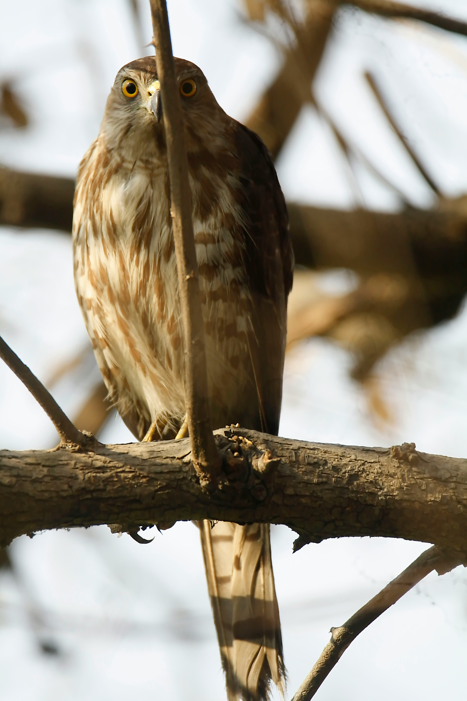

The Shikra is a small woodland hawk with short rounded wings, a long tail, and sharp talons. Adults commonly show grey upperparts and barred underparts, while females are generally larger than males. It is an agile hunter that catches small birds, lizards, rodents, frogs, and insects. Shikras are adaptable and can live in forests, farmland, gardens, plantations, and cities with sufficient tree cover.